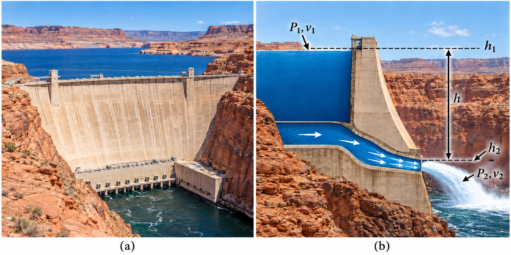
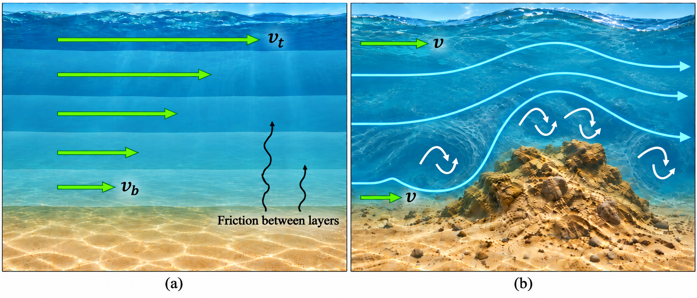
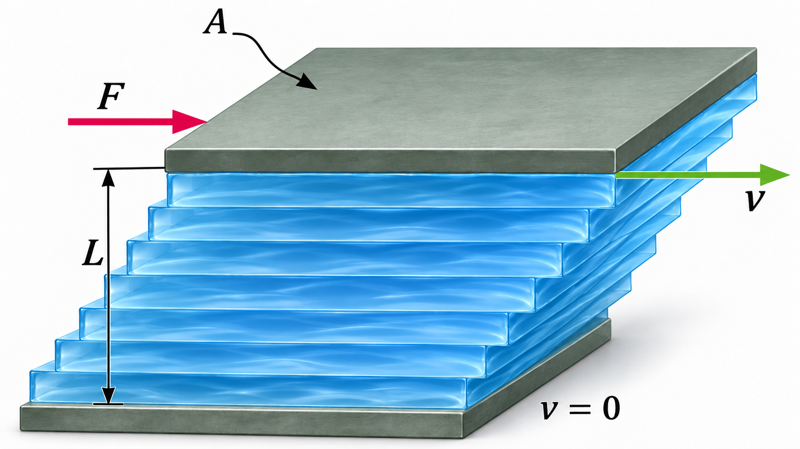
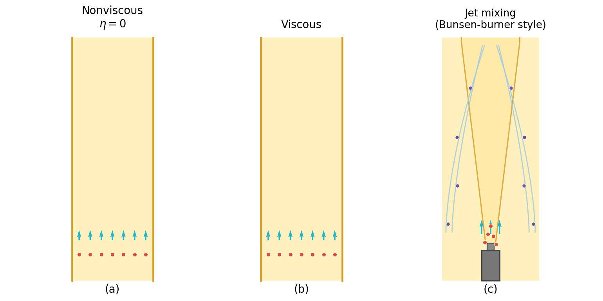
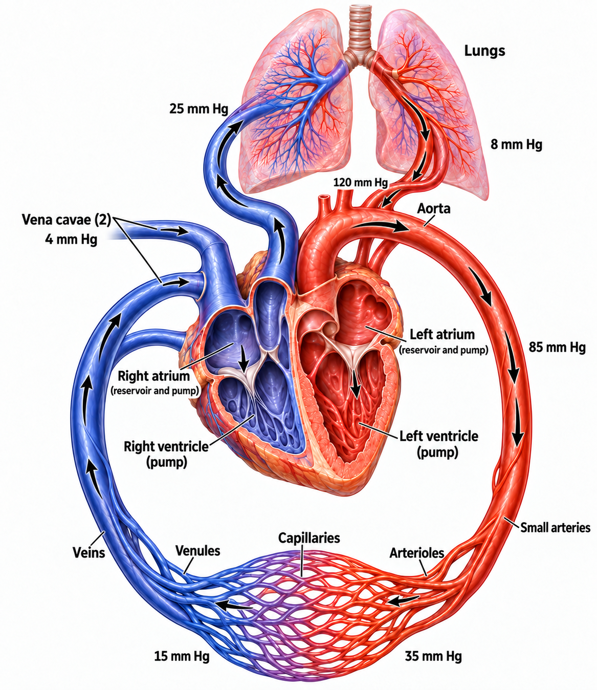
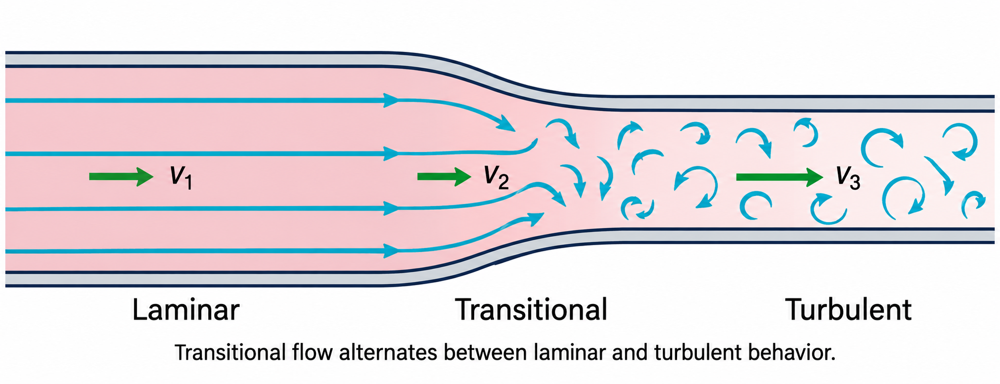
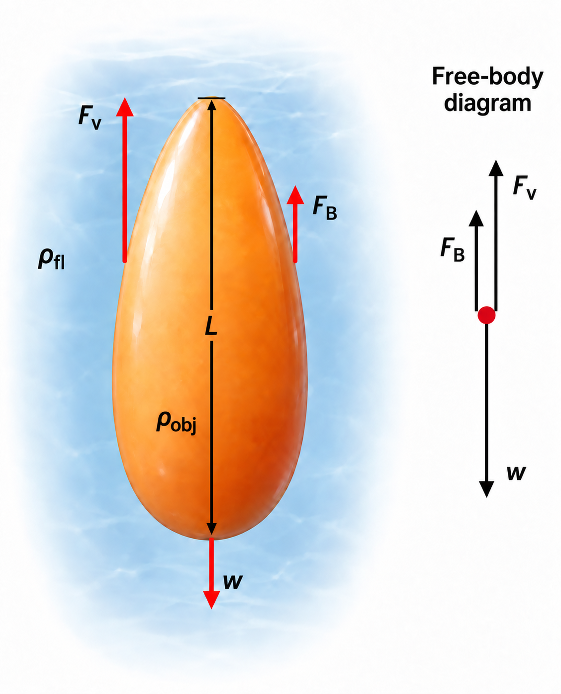
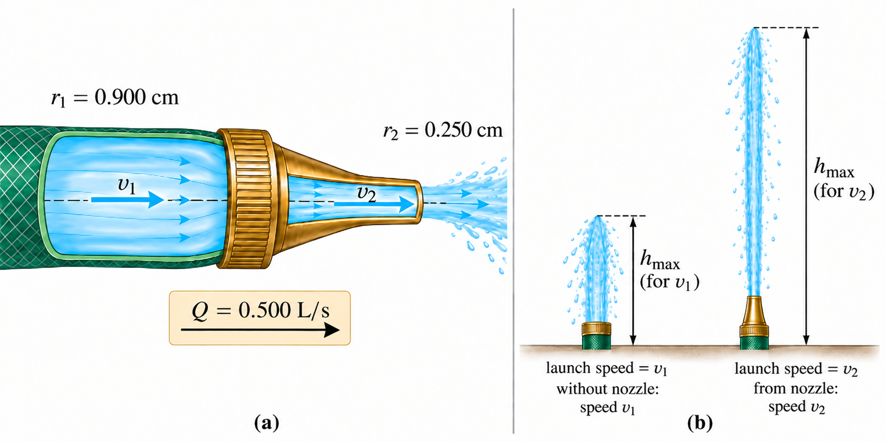

11. Fluids: Dynamics#
Oct 06, 2026 | 9374 words | 62 min read
Chapter roadmap
Moving fluids carry volume, momentum, and energy. This chapter connects ideal flow to the resistance of real fluids and then examines how molecules move even when a fluid has no overall flow.
As you read, focus on three questions:
How does conservation of mass connect a fluid’s speed to the area available for flow?
How do pressure, height, and speed exchange energy, and when must viscous losses be included?
How do size, viscosity, and random molecular motion determine which transport processes matter?
These ideas will help us analyze hoses, blood vessels, falling objects, and transport across membranes.
11.1. Flow Rate and its Relation to Velocity#
The volume of fluid \(V\) passing by some location through an area \(A\) during a time interval \(t\) defines the flow rate \(Q\). Mathematically this is given by
Note that the \(V\) used here is for volume not velocity.
The SI unit for flow rate is \(\rm m^3/s\), but other units are used due to their ease of measurement. For example, the heart (of a resting adult) pumps blood at a rate of \(5\ {\rm L/min}.\)
Fig. 11.1 Flow rate is the volume of fluid per unit time flowing through the cross-sectional area \(A\). The tracer particles show the fluid moving through a fixed cross-section. During a time \(t\), the fluid travels a distance \(d=\bar{v}t\), so the volume that passes through the cross-section is \(V=Ad\). Therefore, the volume flow rate is \(Q=V/t=A\bar{v}\). Adapted from OpenStax, College Physics 2e, Figure 12.2. Animation created using Manim.#
Flow rate and velocity are related, but different physical quantities. Consider the flow rate of a river:
The greater the velocity of the water, the greater the flow rate of the river.
The flow rate also depends on the size of the river.
A rapid mountain stream carries less water than the Amazon River. The precise relationship between the flow rate \(Q\) and average velocity \(\bar{v}\) depends on the cross-sectional area \(A\) by
The flow rate is directly proportional to both the magnitude of the average velocity (or speed) and the size of the river, pipe or other conduit. The larger the pipe, the greater its cross-sectional area. Figure 11.1 shows a shaded cylinder, where a volume \(V\) is found by the amount of fluid that flows past a point \(P\) in a time \(t\). The volume is determined using the cross-section \(A\) and the distance \(d\) traveled by the cross-section or \(V=Ad\). If we divide both sides by \(t\), then we find
and the average speed is \(\bar{v}=d/t\).
Fig. 11.2 For steady, incompressible flow, the same volume of fluid must pass through each cross-section of the tube in the same amount of time. As the tube narrows from area \(A_1\) to \(A_2\), the fluid speed increases from \(v_1\) to \(v_2\) so that the volume flow rate remains constant. This relationship gives the continuity equation \(A_1v_1=A_2v_2\). Adapted from OpenStax, College Physics 2e, Figure 12.3. Animation created using Manim.#
Figure 11.2 shows an incompressible fluid flowing along a pipe of decreasing radius. The same amount of fluid must flow past any point in the tube in a given time to ensure the continuity of flow because the fluid is incompressible. In this case, the velocity must increase because the cross-sectional area of the pipe decreases and the flow rate must be constant.
Consider the flow rate in the wider section \(Q_1\) and the flow rate in the narrower section \(Q_2\). If the flow rate is a constant (i.e., not changing), then
This is called the equation of continuity and applies here to steady, incompressible flow through an unbranched tube. You can see the consequences of this equation by observing how water flows from a hose into a narrow spray nozzle, where the water emerges with a large speed. River water that empties into one end of a reservoir will slow considerably and pick up speed again when/if it leaves the other end of the reservoir.
In the cardiovascular system (and other situations), branching of the flow occurs. The blood is pumped from the heart into arteries that subdivide into smaller arteries (arterioles) which branch into very fine vessels called capillaries. The continuity of flow is maintained but it is the sum of the flow rates in each branch in any portion along the tube that is maintained. As a result, the equation of continuity in a more general form becomes
where \(n_1\) and \(n_2\) are the number of branches in each of the sections along the tube.
11.1.1. Example Problem: Blood Pumped over a Lifetime#
Example Problem: Blood Pumped over a Lifetime
The Problem
How many cubic meters of blood does the heart pump in a \(75\ {\rm yr}\) lifetime if its average flow rate is \(5\ {\rm L/min}\)?
Adapted from OpenStax, College Physics 2e, Example 12.1.
Show worked solution
The Model
We treat the heart’s flow rate as a constant lifetime average. The volume \(V\) counts all blood passing through the heart, including blood that circulates repeatedly. The given flow rate and elapsed time determine this cumulative volume; they do not represent the amount of blood in the body at one instant.
The Math
The definition of flow rate relates the cumulative volume to the elapsed time.
The flow rate and lifetime must use compatible time units. A year contains approximately \(5.26\times10^5\ {\rm min}\), and a cubic meter contains \(10^3\ {\rm L}\).
The Conclusion
The heart pumps roughly \(2\times10^5\ {\rm m^3}\) over this lifetime. The large cumulative volume is reasonable because the same blood circulates repeatedly. The estimate assumes that the stated average adequately represents changing activity levels and ages.
11.1.2. Example Problem: Speed in a Hose and Nozzle#
Example Problem: Speed in a Hose and Nozzle
The Problem
A nozzle of radius \(0.25\ {\rm cm}\) is attached to a garden hose of radius \(0.90\ {\rm cm}\). The volume flow rate is \(0.50\ {\rm L/s}\). Calculate the average water speed (a) in the hose and (b) in the nozzle.
Adapted from OpenStax, College Physics 2e, Example 12.2.
Show worked solution
The Model
We model the water as incompressible and the flow as steady. Subscript 1 denotes the hose and subscript 2 the nozzle. Both circular cross-sections carry the same flow rate, so \(Q=A\bar{v}\) determines each average speed. The radii must be converted to meters before we calculate the areas.
The Math
(a) The area of the hose is \(A_1=\pi r_1^2\), so the flow-rate relationship determines its average speed.
(b) Continuity requires equal volume flow rates in the hose and nozzle. Solving for the nozzle speed makes the dependence on radius explicit.
The nozzle has a much smaller area, so the same volume passes through it at a greater average speed.
The Conclusion
The speeds are approximately \(2.0\ {\rm m/s}\) in the hose and \(25\ {\rm m/s}\) in the nozzle. The nozzle speed is about 13 times greater because its area is about 13 times smaller. This comparison holds for the specified common flow rate; an actual nozzle can also change the flow rate supplied by the plumbing.
11.1.3. Example Problem: Branching in the Cardiovascular System#
Example Problem: Branching in the Cardiovascular System
The Problem
(a) Blood leaves the heart through an aorta of radius \(10\ {\rm mm}\) at a flow rate of \(5.0\ {\rm L/min}\). Calculate its average speed.
(b) The same total flow passes through capillaries with average diameter \(8.0\ \mu{\rm m}\) and average blood speed \(0.33\ {\rm mm/s}\). Estimate the number of capillaries carrying this flow.
Adapted from OpenStax, College Physics 2e, Example 12.3.
Show worked solution
The Model
We use a steady, incompressible average-flow model. The aorta carries the total flow, while the capillaries share it in parallel. We approximate each capillary by a circular tube with the stated average diameter and speed. Part (a) asks for the aortic speed, and part (b) asks for the number \(n\) needed to carry the same total flow.
The Math
(a) Converting liters per minute to cubic meters per second gives the flow rate needed for SI areas and speeds.
Dividing this flow rate by the aortic area determines the average speed.
(b) Each capillary has radius \(4.0\times10^{-6}\ {\rm m}\). The combined flow through \(n\) capillaries must equal the aortic flow.
The estimated count follows from the unrounded total flow and the stated capillary dimensions.
The Conclusion
Blood moves through the aorta at about \(0.27\ {\rm m/s}\), and the model requires roughly \(5.0\times10^9\) capillaries. Although each capillary is narrow, their combined cross-sectional area is very large, allowing slow flow and time for exchange. This is an estimate based on representative vessel sizes and speeds.
11.2. Bernoulli’s Equation#
When a fluid flows into a narrower channel, its speed increases. It also means that its kinetic energy increases. Where does that change in kinetic energy come from?
The increased kinetic energy comes from the net work done on the fluid to push it into the channel and by the gravitational force if there is a vertical displacement. Recall the work-energy theorem
There is a pressure difference (\(\Delta P = P_2-P_1\)) when the channel narrows. This pressure difference results in a net force on the fluid (i.e., \(F = PA\)). The net work done increases the fluid’s kinetic energy. As a result, the pressure decreases as speed increases along a streamline at constant height in steady, incompressible flow with negligible viscous losses, whether or not the fluid is confined to a tube.
There are a number of examples of pressure dropping in rapidly-moving fluids.
Shower curtains bulge when the shower is on. The high-velocity stream of water and air creates a region of lower pressure inside the shower, while atmospheric pressure is on the other side. The pressure difference results in a net force pushing the curtain in.
Passing a truck on the highway, your car tends to veer toward it. The high-velocity air between the car and the truck creates a region of lower pressure, and the vehicles are pushed together by the greater pressure on the outside.
Fig. 11.3 Air passing through the narrow gap between two vehicles moves faster, reducing the pressure between them. The greater pressure on the outside tends to push the vehicles toward one another. Source: OpenStax, College Physics 2e, Figure 12.4.#
The relationship between pressure and velocity in fluids is described quantitatively by Bernoulli’s equation, named after Daniel Bernoulli. Bernoulli’s equation applies along a streamline in steady, incompressible flow with negligible viscous losses and no pump or turbine between the points. The pressure \(P\), kinetic energy per unit volume, and gravitational potential energy per unit volume add to a constant, or
which depends on the density \(\rho\) of the fluid, the velocity of the fluid \(v\), height \(h\) above some reference point, and the acceleration due to gravity \(g\).
If we follow a small volume of fluid along its path, various quantities may change, but the total sum remains constant. Let the subscripts \(1\) and \(2\) refer to two points along the path that the bit of fluid follows. Bernoulli’s equation becomes
Bernoulli’s equation is a form of the conservation of energy principle, where the second and third terms are the kinetic and potential energy per unit volume and the mass \(m\) is replaced with the density \(\rho\). Each term has units of energy per unit volume.
11.2.1. Bernoulli’s Equation for Static Fluids#
Let’s first consider the case where the fluid is static (i.e., \(v_1 = v_2 = 0\)). Bernoulli’s equation simplifies to
We can measure \(h_1\) relative to point 2 so that \(h_2 = 0\) and \(h_1=h\). In this case we find that
For static fluids, the pressure increases with the depth \(h\). Bernoulli’s equation includes the fact that the pressure due to the weight of the fluid is \(\rho gh\).
11.2.2. Bernoulli’s Principle – Bernoulli’s Equation at Constant Depth#
Another situation is when the fluid moves but its depth is constant (i.e., \(h_1 = h_2\)). Under that condition, Bernoulli’s equation becomes
The condition for constant height is called Bernoulli’s principle. Pressure drops as speed increases in a moving fluid. We can see this when \(v_2 > v_1\), then \(P_2 < P_1\) in order for the equality to hold (i.e., both sides are positive).
11.2.3. Entrainment#
With higher pressure on the outside, a high-velocity fluid forces other fluids into the stream, which is called entrainment. Entrainment devices have been in use since ancient times, particularly as pumps to raise water small heights (e.g., draining swamps, fields, or other low lying areas).
Fig. 11.4 Entrainment devices use increased fluid speed to create lower pressure and draw another fluid into the moving stream. Source: OpenStax, College Physics 2e, Figure 12.5.#
11.2.4. Wings and Sails#
The airplane wing is an example of Bernoulli’s principle in action. The wing shape and angle of attack establish a flow pattern that can move faster over the upper surface. A longer upper path alone does not explain this speed difference, and air parcels above and below the wing do not have to reunite at the trailing edge (see NASA: Bernoulli and Newton). The pressure on top of the wing is reduced, which creates an upward force (or lift). The same lift can also be described by the downward momentum imparted to the air. The deflected air molecules result in an upward force on the wing (i.e., Newton’s third law).
Sails have a shape similar to a wing. The pressure on the front of the sail (\(P_{\rm front}\)) is lower than the pressure on the back of the sail, \(P_{\rm back}\). This results in a forward force and allows a sailboat with a keel to make progress upwind by tacking, rather than sailing directly into the wind.
Fig. 11.5 Pressure differences associated with moving air help produce lift on a wing and a forward force on a sail. Source: OpenStax, College Physics 2e, Figure 12.6.#
11.2.5. Velocity Measurement#
Fig. 11.6 Fluid speed can be measured from a pressure difference using Bernoulli’s principle, as in a manometer or Pitot tube. Source: OpenStax, College Physics 2e, Figure 12.7.#
A manometer can be used to measure the fluid velocity based on Bernoulli’s principle. There are two tubes that are small enough so they do not appreciably disturb the flow. The tube facing the oncoming fluid creates a dead spot having zero velocity (i.e., \(v_1=0\)) in front of it, while fluid passing the other tube has a velocity \(v_2\). This means that Bernoulli’s principle reduces to
There is a drop in pressure at \(P_2\), so the fluid in the manometer rises by \(h\) on the side connected to the second opening, where
Solving for \(v_2\), we find that
Video: Where the Bernoulli terms come from
Watch Khan Academy for the derivation of Bernoulli’s equation (see below).
Identify the work done by pressure at each end of the moving fluid segment. Explain why dividing its energy equation by the segment’s volume produces terms with units of pressure. State the assumptions required before applying this model to a real hose.
11.2.6. Example Problem: Pressure in a Garden Hose#
Example Problem: Pressure in a Garden Hose
The Problem
Water speeds up from \(1.96\ {\rm m/s}\) in a hose to \(25.5\ {\rm m/s}\) at its nozzle. The outlet absolute pressure is \(1.01\times10^5\ {\rm Pa}\). Calculate the absolute pressure in the hose for level, steady flow with negligible viscous losses. Use \(\rho=1000\ {\rm kg/m^3}\).
Adapted from OpenStax, College Physics 2e, Example 12.4.
Show worked solution
The Model
We apply Bernoulli’s equation along a streamline from the hose (point 1) to the outlet (point 2). The water is incompressible, the points have equal heights, and no pump acts between them. The increase in kinetic energy per unit volume must come from pressure work. The unknown \(P_1\) is an absolute pressure because \(P_2\) is absolute.
The Math
Equal heights cancel the gravitational terms in Bernoulli’s equation. Rearranging isolates the upstream pressure.
The positive increase in squared speed requires an upstream pressure greater than the outlet pressure.
The Conclusion
The hose pressure is approximately \(4.24\times10^5\ {\rm Pa}\) absolute. It exceeds atmospheric pressure, as expected for water accelerating toward a free outlet. Viscous losses would require a still greater upstream pressure to maintain these same speeds.
11.3. General Applications of Bernoulli’s Equation#
11.3.1. Torricelli’s Theorem#
Consider water gushing from a large tube through a dam. What is its speed as it emerges?
If resistance is negligible, the speed is the same as if the water fell a distance \(h\) from the surface of the reservoir. The water’s speed is independent of the size of the opening.

Fig. 11.7 (a) Glen Canyon Dam provides a real-world example of water stored at a higher elevation. (b) In the profile view, water moves from the reservoir through a narrowing conduit and exits at a lower elevation. The height difference \(h=h_1-h_2\) determines the ideal exit speed. If the reservoir surface is much wider than the outlet, then \(v_1\approx 0\), and if both locations are exposed to atmospheric pressure, \(P_1=P_2\). Bernoulli’s equation then gives \(v_2=\sqrt{2gh}\), the same speed an object would acquire after falling through the vertical distance \(h\). This result is known as Torricelli’s theorem. Adapted from OpenStax, College Physics 2e, Figure 12.8.#
We can analyze this using Bernoulli’s equation since the depth is not constant. We consider water flowing from the surface (point 1) to the tube’s outlet (point 2). Then we have from Bernoulli’s equation
The pressure is the same at the top of the reservoir and at the outlet because both are exposed to the outside air (i.e., \(P_1 = P_2 = P_{\rm atm}\)). Under this condition, Bernoulli’s equation reduces to
Notice that we canceled the common factor of \(\rho\) from all the terms and multiplied by a factor of 2 throughout. We can measure the height difference of the water as \(h = h_1 - h_2\) so that the equation becomes
This is a kinematic equation for any object falling a distance \(h\) with negligible resistance. In fluids, this is called Torricelli’s theorem.
11.3.2. Power in Fluid Flow#
Power is the rate at which work is done or energy (in any form) is used or supplied. We can apply this concept through Bernoulli’s equation by considering the following form:
All three terms have units of energy per volume. Recall that the flow rate \(Q = V/t\) relates the volume to the time. This means that we can multiply the energy per volume (E/V) with the volume per time (V/t) to get an energy per time, or power. This means we can multiply Bernoulli’s equation by the flow rate to get
Each term has a clear physical meaning:
\(PQ\) is the pressure-work rate at a cross-section. A pump that changes only the pressure supplies power \((P_{\rm out}-P_{\rm in})Q\).
The middle term \(\frac{1}{2}\rho v^2 Q\) is the power supplied to a fluid to give it its kinetic energy.
The final term is the power going to gravitational potential energy.
11.3.3. Example Problem: Pressure at the Base of a Fire Hose#
Example Problem: Pressure at the Base of a Fire Hose
The Problem
A fire hose has an inside diameter of \(6.4\ {\rm cm}\) and carries \(40\ {\rm L/s}\) of water. The hose rises \(10\ {\rm m}\) to an open nozzle of inside diameter \(3.0\ {\rm cm}\). What gauge pressure is required at the base of the hose if viscous losses are negligible? Use \(\rho=1000\ {\rm kg/m^3}\) and \(g=9.81\ {\rm m/s^2}\).
Adapted from OpenStax, College Physics 2e, Example 12.5.
Fig. 11.8 An elevated fire-hose nozzle. The base pressure must supply the energy needed to raise the water and increase its speed. The free outlet is exposed to atmospheric pressure. Source: OpenStax, College Physics 2e, Figure 12.9.#
Show worked solution
The Model
We model steady, incompressible flow from the hose base (point 1) to the free outlet (point 2). We define the vertical \(h\)-axis with positive direction upward and its origin at the hose base, so \(h_1=0\) and \(h_2=10\ {\rm m}\). The outlet gauge pressure is zero. Continuity determines the speeds, and Bernoulli’s equation determines the required base gauge pressure.
The Math
The common flow rate is \(0.040\ {\rm m^3/s}\). Each speed equals this flow rate divided by the corresponding circular area; the radii are half the given diameters.
Both the increase in speed and the gain in height require energy from pressure work. Bernoulli’s equation isolates the base pressure with both contributions positive.
The numerical terms show how acceleration and elevation contribute to the required gauge pressure.
The Conclusion
The required base gauge pressure is about \(1.6\times10^6\ {\rm Pa}\). It must supply both the water’s increased kinetic energy and its gravitational potential energy. This ideal estimate is a lower bound for the specified flow because it neglects losses in the hose and nozzle.
11.3.4. Example Problem: Power Supplied by a Fire Pump#
Example Problem: Power Supplied by a Fire Pump
The Problem
A pump receives water from a hydrant at gauge pressure \(0.70\times10^6\ {\rm Pa}\) and delivers it to the fire hose at \(1.62\times10^6\ {\rm Pa}\). The flow rate is \(40\ {\rm L/s}\). The inlet and outlet hoses both have diameter \(6.4\ {\rm cm}\) and are at the same height. What power does the pump supply to the water?
Adapted from OpenStax, College Physics 2e, Example 12.6.
Show worked solution
The Model
We calculate hydraulic power delivered to the water, not the pump’s electrical or engine input. Equal inlet and outlet areas give equal speeds, and equal heights eliminate a change in gravitational potential energy. The pump therefore increases only the pressure-work contribution to the mechanical energy flow.
The Math
A pressure increase \(\Delta P\) transfers energy \(\Delta P\,V\) to volume \(V\). Dividing by elapsed time gives the hydraulic power in terms of flow rate.
The pressure difference is \(0.92\times10^6\ {\rm Pa}\), and the flow rate is \(0.040\ {\rm m^3/s}\).
The Conclusion
The pump supplies about \(37\ {\rm kW}\) to the water. The result is positive because the pump raises the pressure. The required input power would be greater because a real pump is not perfectly efficient.
11.4. Viscosity and Laminar Flow#
When preparing a glass of juice, the liquid flows freely and quickly when poured. However, the syrup you pour on your pancakes flows slowly and some sticks to the inside of the bottle. The difference is fluid friction between:
the fluid itself, and
the fluid and its surroundings.
The difference in flow due to this friction is called the fluid’s viscosity. Juice is mostly water with some sugar mixed in, which means it will have a low viscosity. In contrast, the syrup has a high viscosity.
The precise definition of viscosity is based on the type of flow: laminar or turbulent.
Laminar flow is characterized by the smooth flow of the fluid in layers that do not mix.
Turbulent flow (or turbulence) is characterized by eddies and swirls that mix layers of fluid together.
We see schematically how laminar and turbulent flow differ for the water flowing towards a beach. Far from the beach the layers flow without mixing and the flow is thus laminar. When there is a bump in the submerged coastline, there can be turbulence where the layers mix and there are significant velocities in directions other than the overall direction of flow.

Fig. 11.9 (a) In laminar flow, the fluid moves in smooth layers that slide past one another. The speed is greater away from the bottom boundary and smaller near the bottom, where friction slows the fluid. (b) When the flow encounters an obstruction, the streamlines are disturbed and eddies form in the wake, producing turbulent flow and mixing. Adapted from OpenStax, College Physics 2e, Figure 12.11.#
To show the direction of flow, diagrams of these systems use streamlines that show the direction over small distances. Streamlines show the instantaneous velocity direction. In turbulent flow, the velocity pattern changes irregularly with time and eddies mix fluid between regions. Turbulence has two main causes:
An obstruction or sharp corner can create turbulence by imparting velocities perpendicular to the flow (e.g., for a faucet).
High speeds cause turbulence, where the drag between adjacent layers of fluid and between the fluid and its surrounding form swirls and eddies (e.g., for a jet).
We can model viscosity of a fluid using two plates and dividing the fluid into layers of (approximately) laminar flow. The bottom of the two plates is held fixed, while the top plate is moved to the right and drags fluid with it. The layer (or lamina) of fluid in contact with either plate does not move relative to the plate. The top plate moves with a velocity \(v\) while the bottom layer remains at rest.
Each successive layer from the top down exerts a force on the layer below it and tries to drag it along. This produces a continuous variation in speed from \(v\) to \(0\). Since this is laminar flow, we make sure that the layers do not mix. The motion appears like a continuous shearing motion. Fluids have zero shear strength, but the rate at which they are sheared is related to the same geometrical factors \(A\) and \(L\) used for shear deformation for solids (see Sideways Stress).

Fig. 11.10 A fluid confined between two parallel plates illustrates how viscosity produces a velocity gradient. The lower plate is stationary, while a force \(F\) moves the upper plate of area \(A\) to the right with speed \(v\). Because the fluid adheres to the surfaces, its speed is zero at the lower plate and increases gradually to \(v\) at the upper plate across the separation \(L\). The resulting shear between adjacent fluid layers provides a simple model for viscous resistance. Adapted from OpenStax, College Physics 2e, Figure 12.12.#
A force \(F\) is required to keep the top plate moving at a constant velocity \(v\), where experiments have shown that this force depends on four factors.
The force \(F\) is directly proportional to \(v\) (for low enough speeds to avoid turbulence).
The force \(F\) is proportional to the area \(A\) of the plate. This seems reasonable because \(A\) is directly proportional to the amount of fluid being moved.
The force \(F\) is inversely proportional to the distance between the plates \(L\). At a fixed plate speed, a larger separation reduces the velocity gradient \(v/L\) and therefore reduces the shear force.
The force \(F\) is proportional to the coefficient of viscosity \(\eta\) (or
$\eta$). The greater the viscosity, the greater the force required.
These dependencies are combined into the following relation:
which gives us a working definition of the fluid viscosity through the coefficient \(\eta\), or
The SI unit of viscosity is \(\rm N\cdot m/[(m/s)m^2] = (N/m^2)s\), which is a pressure multiplied by a time, or \(\rm Pa\cdot s\).
Viscosity varies from one fluid to another by several orders of magnitude. The viscosities of gases are much less than those of liquids, where these viscosities are also temperature dependent. Aspirin reduces platelet aggregation and clot formation; describing this as blood thinning does not mean that it simply lowers the viscosity in this model.
Fluid |
Temperature (\(^\circ{\rm C}\)) |
Viscosity \(\eta\) (\({\rm mPa\cdot s}\)) |
|---|---|---|
Gases |
||
Air |
0 |
0.0171 |
20 |
0.0181 |
|
40 |
0.0190 |
|
100 |
0.0218 |
|
Ammonia |
20 |
0.00974 |
Carbon dioxide |
20 |
0.0147 |
Helium |
20 |
0.0196 |
Hydrogen |
0 |
0.0090 |
Mercury vapor |
20 |
0.0450 |
Oxygen |
20 |
0.0203 |
Steam |
100 |
0.0130 |
Liquids |
||
Water |
0 |
1.792 |
20 |
1.002 |
|
37 |
0.6947 |
|
40 |
0.653 |
|
100 |
0.282 |
|
Whole blood |
20 |
3.015 |
37 |
2.084 |
|
Blood plasma |
20 |
1.810 |
37 |
1.257 |
|
Ethyl alcohol |
20 |
1.20 |
Methanol |
20 |
0.584 |
Heavy machine oil |
20 |
660 |
Motor oil (SAE 10) |
30 |
200 |
Olive oil |
20 |
138 |
Glycerin |
20 |
1500 |
Honey |
20 |
2000–10000 |
Maple syrup |
20 |
2000–3000 |
Milk |
20 |
3.0 |
Corn oil |
20 |
65 |
Representative values. Viscosity depends on temperature and, for materials such as blood, oils, honey, and syrup, also on composition and measurement conditions. Adapted from OpenStax, College Physics 2e, Table 12.1.
11.4.1. Laminar Flow Confined to Tubes – Poiseuille’s Law#
What causes flow?
In a horizontal tube with viscous resistance, a pressure difference drives steady flow. The flow rate \(Q\) is in the direction from high to low pressure. The greater the pressure differential between two points, the greater the flow rate. This relationship is given mathematically as
where \(P_1\) and \(P_2\) are the pressures at points 1 and 2, while the \(R\) is the resistance to flow. The resistance \(R\) includes everything (except pressure) that affects flow rate. For example,
\(R\) is greater for a long tube compared to a short one.
The greater the viscosity of the fluid, the greater the value of \(R\).
Turbulence greatly increases \(R\), whereas increasing the diameter of a tube decreases \(R\).
If viscosity is zero, the fluid is frictionless and the resistance to flow is also zero. Comparing frictionless flow in a tube to viscous flow, we see that the speed is greatest at midstream because of drag at the boundaries in the viscous fluid.

Fig. 11.11 (a) In an ideal nonviscous fluid, the speed is uniform across the tube, so fluid particles at different positions move together. (b) In a viscous fluid, interaction with the walls slows the fluid near the boundaries, while the fluid near the center moves fastest, producing a curved velocity profile. (c) A fluid jet can also entrain surrounding fluid as it moves, causing the flow to spread and mix, as occurs in the gas flow associated with a Bunsen burner flame. Adapted from OpenStax, College Physics 2e, Figure 12.13.#
The resistance \(R\) to laminar flow of an incompressible fluid with viscosity \(\eta\) through a horizontal tube of uniform radius \(r\) and length \(l\) is given by
This is called Poiseuille’s law for resistance after J.L. Poiseuille, who derived it in an attempt to understand the flow of blood.
Fig. 11.12 Poiseuille’s law relates the volume flow rate \(Q\) to the pressure difference \(\Delta P\), fluid viscosity \(\eta\), tube length \(l\), and radius \(r\). For the same pressure difference, viscosity, and length, a smaller vessel radius greatly increases the resistance \(R=8\eta l/(\pi r^4)\) and reduces the flow rate \(Q=\pi r^4\Delta P/(8\eta l)\). The comparison illustrates why even modest narrowing of a blood vessel can strongly affect its resistance to flow. Adapted from OpenStax, College Physics 2e, Figure 12.14.#
Let’s see what insights we can derive from Poiseuille’s expression for \(R\).
Resistance is directly proportional to both fluid viscosity \(\eta\) and the length \(l\) of the tube. These both directly affect the amount of friction encountered.
The radius \(r\) of a tube also affects the resistance, where a greater radius allows for a greater flow. Since the radius is raised to the fourth power, this means that any change in the radius of a tube has a very large effect on resistance. Doubling the radius of a tube decreases resistance by a factor of \(2^4 = 16\).
We can combine the expression for the flow rate \(Q\) and the resistance \(R\) to get a fuller expression of the flow rate as
This equation describes laminar flow through a tube.
The circulatory system provides many examples of Poiseuille’s law in action, where blood flow is regulated by changes in the vessel size and blood pressure. Blood vessels are not rigid but elastic. Adjustments to blood flow are primarily made by varying the size of the vessels, since the resistance is so sensitive to the radius.
During vigorous exercise, blood vessels are selectively dilated to important muscles and blood pressure increases. This creates both greater overall blood flow and increased flow to specific areas. Conversely, decreases in vessel radii can greatly reduce blood flow (e.g., from plaques in the arteries).
If a vessel’s radius is reduced by only \(5\%\), the flow rate is reduced to about \((1-0.05)^4 = 0.81\), or \(81\%\) of its original value. A \(19\%\) decrease in flow is caused by a \(5\%\) decrease in radius. The body may compensate by increasing the pressure difference by about \(23\%\), since \(1/(0.95)^4\approx1.23\), but this presents hazards to the heart and any vessel that has weakened walls.
11.4.2. Flow and Resistance as Causes of Pressure Drops#
You may have noticed that water pressure in your home might be lower than normal on hot summer days when there is more use. This pressure drop occurs in the water main before it reaches your home. We can understand why the pressure \(P_1\) to your home drops during times of heavy usage by defining \(P_2\) as the pressure at the water main and rearranging:
During times of heavy use, the flow rate \(Q\) is large. This means that \(P_2-P_1\) (i.e., the pressure drop) must also be large. It is correct to think of flow and resistance as causing the pressure to drop from \(P_2\) to \(P_1\), where a constant \(R\) describes the laminar model. In turbulent flow, an effective resistance generally changes with the flow rate.
Fig. 11.13 During heavy use, resistance and large flow rate can produce a significant pressure drop between the water works and the pressure supplied to homes. Source: OpenStax, College Physics 2e, Figure 12.15.#
In the human circulatory system, pressure is created by the heart’s two pumps: the right and left ventricles. The pressure is reduced by the resistance of the blood vessels as the blood flows through them. The right atrium receives the lower pressure blood from two major veins and passes it to the right ventricle, which pumps it through the lungs for gas exchange with atmospheric gases (i.e., push out carbon dioxide and take in oxygen).

Fig. 11.14 The heart creates the pressure differences that drive blood through the pulmonary and systemic circuits. Pressure decreases along the vessels as viscous resistance dissipates mechanical energy. Arrows indicate blood-flow direction, and the labeled values show representative pressures throughout the circulation. Adapted from: OpenStax, College Physics 2e, Figure 12.16.#
The circulatory system branches from arteries to even smaller vessels, where the smallest are capillaries. There is a considerable flexibility in the flow regulation to the organs in the body by the constriction and dilation of the arteries and especially the arterioles leading to them. The sensitivity of flow to tube radius makes this flexibility possible over a large range of flow rates.
Each branching of larger vessels into smaller vessels increases the total cross-sectional area of the tubes through which the blood flows. For example, an artery with a cross section of \(1\ {\rm cm^2}\) may branch into 20 smaller arteries, each with cross-sections of \(0.5\ {\rm cm^2}\), with a total of \(10\ {\rm cm^2}\). The resistance of the branchings is reduced so that pressure is not entirely lost.
Because \(Q = A\bar{v}\) and \(A\) increases through branching, the average velocity of the blood in the smaller vessels is reduced. The blood velocity in the aorta (\(d = 1\ {\rm cm}\)) is about \(25\ {\rm cm/s}\), while in the capillaries (\(d = 20\ {\rm \mu m} = 0.002\ {\rm cm}\)) the velocity is about \(1\ {\rm mm/s}\). This reduced velocity allows the blood to exchange substances with the cells in the capillaries and alveoli.
11.4.3. Example Problem: Plaque Deposits and Blood Flow#
Example Problem: Plaque Deposits and Blood Flow
The Problem
Plaque deposits reduce the flow rate in a coronary artery to half its original value. By what factor has the artery radius changed if the flow remains laminar and the pressure difference, vessel length, and blood viscosity remain constant?
Adapted from OpenStax, College Physics 2e, Example 12.7.
Show worked solution
The Model
We approximate the artery by a circular tube obeying Poiseuille’s law. Subscripts 1 and 2 denote the original and narrowed states. Holding the pressure difference, viscosity, and length constant makes flow rate proportional to the fourth power of radius. The unknown is the ratio \(r_2/r_1\).
The Math
Taking the ratio of Poiseuille’s law for the two states cancels every unchanged factor.
The new flow rate is half the original, so the radius ratio is the positive fourth root of one-half.
The fractional decrease compares the lost radius with its original value.
The Conclusion
The radius becomes about \(0.84\) of its original value, a reduction of only \(16\%\). Such a modest change halves the flow because of the fourth-power dependence. The estimate assumes unchanged driving pressure and laminar flow; real physiological compensation can change those conditions.
11.4.4. Example Problem: Pressure at an IV Needle Entrance#
Example Problem: Pressure at an IV Needle Entrance
The Problem
Saline flows at \(0.12\ {\rm cm^3/s}\) through a needle of radius \(0.15\ {\rm mm}\) and length \(2.5\ {\rm cm}\). The vein’s gauge pressure is \(8.0\ {\rm mm\,Hg}\). What gauge pressure is needed at the needle entrance? Treat saline as having the viscosity of water at \(20^\circ{\rm C}\), \(\eta=1.0\times10^{-3}\ {\rm Pa\cdot s}\), and use \(1\ {\rm mm\,Hg}=133.3\ {\rm Pa}\).
Adapted from OpenStax, College Physics 2e, Example 12.8.
Show worked solution
The Model
We treat the needle as a rigid, horizontal circular tube carrying steady laminar flow of a Newtonian fluid. Following the pressure convention in this section, \(P_2\) is the entrance pressure and \(P_1\) is the lower vein pressure. Poiseuille’s law gives the pressure difference needed to overcome resistance, and the entrance pressure must also exceed the existing vein pressure.
The Math
Rearranging Poiseuille’s law separates the entrance gauge pressure into the viscous pressure drop and the vein gauge pressure.
The vein pressure converts to \(P_1=(8.0\ {\rm mm\,Hg})(133.3\ {\rm Pa/mm\,Hg})=1070\ {\rm Pa}\). The radius, length, and flow rate become \(1.5\times10^{-4}\ {\rm m}\), \(0.025\ {\rm m}\), and \(1.2\times10^{-7}\ {\rm m^3/s}\), respectively.
The Conclusion
The entrance gauge pressure must be approximately \(1.6\times10^4\ {\rm Pa}\). Most of this pressure is needed to overcome the needle’s resistance, which is large because its radius is small. The next section checks whether the assumed laminar flow is consistent with these conditions.
11.5. Onset of Turbulence#
Sometimes we can predict if flow will be laminar or turbulent. The flow in a very smooth tube or around a smooth, streamlined object will be laminar at low velocity. We also know that at high velocity, even flow in a smooth tube (or around a smooth object) will experience turbulence. It is more difficult to predict conditions between these extremes. At intermediate velocities, the flow may oscillate back and forth indefinitely between laminar and turbulent.
An occlusion (or narrowing) of an artery is likely to cause turbulence because of the irregularity of the blockage, as well as the complexity of blood as a fluid. Turbulence in the circulatory system is noisy and can sometimes be detected with a stethoscope. These turbulent sounds are called Korotkoff sounds, which occur at the onset of blood flow when the cuff pressure becomes sufficiently small.
Aneurysms (or ballooning of arteries) create significant turbulence and can sometimes be detected with a stethoscope. Heart murmurs are sounds produced by turbulent flow around damaged and insufficiently closed heart valves. Ultrasound can also be used to detect turbulence as a medical indicator in a process analogous to Doppler-shift radar used to detect storms.

Fig. 11.15 For a fixed volume flow rate, blood moves faster through a narrower section of a vessel. The increased speed and disturbances near the constriction can promote turbulence. In the transitional region, flow can alternate between laminar and turbulent behavior. Adapted from: OpenStax, College Physics 2e, Figure 12.17.#
An indicator called the Reynolds number \(N_{\rm R}\) can reveal whether flow is laminar or turbulent. For flow in a tube of uniform diameter, the Reynolds number is defined as
where \(\rho\) is the fluid density, \(v\) is the fluid speed, and \(r\) is the radius of the tube. The Reynolds number is a unitless quantity.
Experiments have revealed that \(N_{\rm R}\) is related to the onset of turbulence. The following values are approximate guides for flow in ordinary tubes; the transition also depends on disturbances and geometry.
For \(N_{\rm R} \lesssim 2000\), the flow is laminar.
For \(N_{\rm R} \gtrsim 3000\), the flow is turbulent.
For values between \(2000-3000\), the flow is unstable where it can be laminar and small obstructions/surface roughness can make it turbulent. It may oscillate randomly between being laminar and being turbulent. The blood flow through most of the body is a quiet, laminar flow. Flow in the aorta can become disturbed during parts of the heartbeat; a speed of order \(35\ {\rm cm/s}\) is an illustrative scale, not a universal transition threshold.
11.5.1. Example Problem: Is Flow through the Needle Laminar?#
Example Problem: Is Flow through the Needle Laminar?
The Problem
For the needle in the preceding IV example, calculate the Reynolds number and assess the laminar-flow assumption. Use \(Q=0.12\ {\rm cm^3/s}\), \(r=0.15\ {\rm mm}\), \(\eta=1.0\times10^{-3}\ {\rm Pa\cdot s}\), and saline density \(\rho=1025\ {\rm kg/m^3}\).
Adapted from OpenStax, College Physics 2e, Example 12.9.
Show worked solution
The Model
The tube Reynolds number compares inertial and viscous effects using the diameter \(2r\) and average speed. We first determine the average speed from the volume flow rate, then compare the Reynolds number with the approximate tube-flow transition range. The fluid and needle are the same as in the preceding example.
The Math
The average speed follows from the volume flow rate through the circular cross-section.
The tube Reynolds number uses this average speed and the needle diameter.
The Conclusion
The dimensionless Reynolds number is about \(520\), well below the approximate tube-flow threshold of \(2000\). Laminar flow is therefore a reasonable assumption for the Poiseuille calculation, although the test does not address every possible entrance or geometry effect.
11.6. Motion of an Object in a Viscous Fluid#
A moving object in a viscous fluid is equivalent to a stationary object in a flowing fluid stream. For example, when you ride a bicycle at \(10\ {\rm m/s}\) in still air, you feel the air in your face exactly as if you were stationary in a \(10\ {\rm m/s}\) wind.
Flow of a stationary fluid around a moving object may be laminar, turbulent, or a combination of the two. Just as with flow in tubes, it is possible to predict when a moving object creates turbulence. We use another form of the Reynolds number \(N_{\rm R}^\prime\) defined for an object moving in a fluid:
where \(L\) is a characteristic length of the object, \(\rho\) is the fluid density, \(\eta\) is its viscosity, and \(v\) is the object’s speed in the fluid.
If \(N_{\rm R}^\prime \lesssim 1\), the flow around the object can be laminar, especially if the object has a smooth shape.
For \(1< N_{\rm R}^\prime \lesssim 10\), the flow can transition to being turbulent, depending on surface roughness. There can be a turbulent wake with some laminar flow over its surface.
For \(10 < N_{\rm R}^\prime \lesssim 10^6\), the flow is entirely turbulent, even at the surface of the object.
Laminar flow occurs mostly when the objects in the fluid are small (e.g., raindrops, pollen, and blood cells in plasma).
Fig. 11.16 As the Reynolds number increases, flow around a sphere changes from laminar to increasingly turbulent, and the viscous drag increases. Source: OpenStax, College Physics 2e, Figure 12.18.#
There is a resistive force called viscous drag \(F_{\rm V}\) that is exerted on a moving object. This force typically depends on the object’s speed. Experiments showed that for laminar flow, viscous drag is proportional to speed, whereas for turbulent flow, it is proportional to the speed squared.
For \(N_{\rm R}^\prime >10^6\), drag increases dramatically and behaves with greater complexity. For laminar flow around a sphere \(F_{\rm V}\) is proportional to the fluid viscosity \(\eta\), characteristic size \(L\), and its speed \(v\). The more viscous the fluid and the larger the object, the more drag we expect. Recall Stokes law, which follows this prescription.
For the special case of a small sphere of radius \(R\) moving slowly in a fluid of viscosity \(\eta\), the drag force follows Stokes’ law, or
An interesting consequence of the increase in viscous drag \(F_{\rm V}\) with speed is that an object falling through a fluid will not continue to accelerate indefinitely. Instead viscous drag increases, slowing acceleration, until the terminal speed is reached and the acceleration of the object becomes zero. Once this happens, the object continues to fall at constant speed.
This is the case for particles of sand falling in the ocean, cells falling in a centrifuge, and sky divers falling through the air. There is a viscous drag on an object that depends on the viscosity of the fluid and the size of the object. But there is also a buoyant force that depends on the density of the object relative to the fluid. Terminal speed will be greatest for low-viscosity fluids, where falling objects have a large density contrast with the fluid. For otherwise similar spheres in the Stokes regime, larger spheres have a greater terminal speed. Thus a skydiver falls more slowly with outspread limbs than when they are in a pike position (i.e., head first with hands at their sides and legs together).

Fig. 11.17 An object falling through a viscous fluid experiences downward weight \(w\), upward buoyant force \(F_B\), and upward viscous drag \(F_v\). At terminal speed, \(F_v+F_B=w\), so the acceleration is zero and the object continues falling at constant speed. The labels \(L\), \(\rho_{\rm obj}\), and \(\rho_{\rm fl}\) identify the object’s characteristic length, object density, and fluid density. Adapted from: OpenStax, College Physics 2e, Figure 12.19.#
11.6.1. Example Problem: Does a Ball Have a Turbulent Wake?#
Example Problem: Does a Ball Have a Turbulent Wake?
The Problem
Calculate the Reynolds number for a ball of diameter \(7.4\ {\rm cm}\) moving through air at \(40\ {\rm m/s}\). Use the source problem’s approximate air properties \(\rho=1.29\ {\rm kg/m^3}\) and \(\eta=1.81\times10^{-5}\ {\rm Pa\cdot s}\). What does the result suggest about its wake?
Adapted from OpenStax, College Physics 2e, Example 12.10.
Show worked solution
The Model
We use the ball’s diameter as the characteristic length \(L\) and its speed relative to the air as \(v\). The external-flow Reynolds number compares inertial and viscous effects. We use it to assess whether creeping flow is plausible; exact wake behavior also depends on the ball’s surface and the incoming flow.
The Math
Converting the diameter to meters gives \(L=0.074\ {\rm m}\). The external-flow Reynolds number follows from the density, speed, length, and viscosity.
The Conclusion
The Reynolds number is about \(2.1\times10^5\), far outside the creeping-flow regime. A separated, turbulent wake is expected under ordinary conditions. This does not mean that every part of the flow next to the ball must be turbulent, and Stokes’ linear drag law is not appropriate.
11.7. Molecular Transport Phenomena#
11.7.1. Diffusion#
Atoms and molecules are in constant motion at any temperature. In fluids, they move about randomly even in the absence of macroscopic flow. This motion is called a random walk and produces diffusion. Diffusion is the movement of substances due to random thermal molecular motion. Fluids can even diffuse through solids.
Fig. 11.18 Random thermal molecular motion produces a random walk, so the net displacement is much smaller than the total path traveled. Source: OpenStax, College Physics 2e, Figure 12.20.#
Diffusion is a slow process over macroscopic distances. The densities of common materials are great enough that molecules cannot travel very far before having a collision that can scatter them in any direction (including straight backward). The root-mean-square displacement \(x_{\rm rms}\) along one coordinate is proportional to the square root of time:
where \(x_{\rm rms}\) represents the root-mean-square distance and is the square root of the mean squared displacement along that coordinate, not the total path length. The \(D\) is the diffusion constant for the particular molecule in a specific medium. The unit for \(D\) is an area per second, or \({\rm m^2/s}\).
Diffusing molecule |
Medium |
\(D\) (\({\rm m^2/s}\)) |
|---|---|---|
Hydrogen (\({\rm H_2}\)) |
Air |
\(6.4\times10^{-5}\) |
Oxygen (\({\rm O_2}\)) |
Air |
\(1.8\times10^{-5}\) |
Oxygen (\({\rm O_2}\)) |
Water |
\(1.0\times10^{-9}\) |
Glucose (\({\rm C_6H_{12}O_6}\)) |
Water |
\(6.7\times10^{-10}\) |
Hemoglobin |
Water |
\(6.9\times10^{-11}\) |
DNA |
Water |
\(1.3\times10^{-12}\) |
Adapted from OpenStax, College Physics 2e, Table 12.2.
Note that \(D\) gets progressively smaller for massive molecules. This decrease is because the thermal speed scale at a given temperature is inversely proportional to the square root of molecular mass. In liquids, molecular size and interactions with the surrounding fluid also strongly affect diffusion. Thus, the more massive molecules diffuse more slowly. The value of \(D\) for oxygen in air is much greater than for oxygen in water.
In water an oxygen molecule makes more collisions in its random walk and is slowed considerably. An oxygen molecule moves only about \(40\ \mu{\rm m}\) in \(1\ {\rm s}\), where each molecule actually collides about \(10^{10}\times\) per second.
Diffusion constants increase with temperature because the average molecular speed increases with temperature. The average kinetic energy of molecules \(\left(\frac{1}{2}mv^2\right)\) is proportional to the absolute temperature.
11.7.2. Rate and Direction of Diffusion#
If you carefully place a drop of food coloring in a still glass of water, it will slowly diffuse into the colorless surroundings until the concentration is the same everywhere. This type of diffusion is called free diffusion because there are no barriers inhibiting it.
Let’s analyze the direction and rate of diffusion. Molecular motion is random in direction, so that simple chance dictates that more molecules will move out of a region of high concentration than into it. The net rate of diffusion is higher initially than after the process is partially completed.
Fig. 11.19 Random particle motion produces net diffusion from higher to lower concentration. The background approaches white as the concentration becomes approximately uniform. Histograms show horizontal particle positions within each section; dashed lines mark the expected equilibrium average per bin. Individual bars fluctuate around these guides because random motion continues at equilibrium. Adapted from: OpenStax, College Physics 2e, Figure 12.21.#
The net rate of diffusion is proportional to the concentration difference. More molecules cross from the high-concentration region toward the low-concentration region than cross in the reverse direction. If the concentrations were the same, there would be no net movement. The net rate of diffusion is also proportional to the diffusion constant \(D\), which is empirical (i.e., experimentally determined). The farther a molecule can diffuse in a given time, the more likely it is to leave the region of higher concentration. Temperature, cohesive forces, and adhesive forces all affect the values of \(D\).
Diffusion is the dominant mechanism by which the exchange of nutrients and waste products occur between the blood and tissue, as well as between air and blood in the lungs. Larger organisms needed quicker methods of transportation than net diffusion because of the large distances involved in the transport, where those born with a proto-circulatory system survived to reproduction more often than those without such an evolutionary trick. Less sophisticated, single-celled organisms still rely totally on diffusion for the removal of waste products and the uptake of nutrients.
11.7.3. Osmosis and Dialysis – Diffusion across Membranes#
Many substances regularly move through cell membranes:
oxygen moves in,
carbon dioxide moves out,
nutrients go in, and
waste goes out.
Because membranes are thin structures (\(6.5-10\ {\rm nm}\) across) diffusion rates through them can be high. Membranes are generally selectively permeable (or semipermeable). One type of semipermeable membrane has small pores that allow only small molecules to pass through. Other types of membranes allow molecules to dissolve in the membrane or react with molecules in the membrane while moving across.
Fig. 11.20 Semipermeable membranes can selectively allow molecules to cross either through pores or by dissolving in the membrane. Source: OpenStax, College Physics 2e, Figure 12.22.#
Osmosis can create a substantial pressure. For example, water moves by osmosis through a membrane that passes water but excludes the solute, from the more dilute solution toward the more concentrated solution when the initial pressures are equal. This can cause the level of the solution to rise, where this movement will continue until the pressure \(\rho g h\) created is large enough to stop further osmosis (i.e., a back pressure). The back pressure \(\rho gh\) that stops osmosis is also called the relative osmotic pressure if neither solution is pure water. If one side contains pure water, then it is called the osmotic pressure of the solution.
Osmotic pressure can be large, depending on the size of the concentration difference. For example, if pure water and sea water are separated by a semipermeable membrane that passes no salt, the osmotic pressure will be \(25.9\ {\rm atm}\). Water will diffuse through the membrane until the salt water surface rises \(268\ {\rm m}\) above the pure-water surface.
Fig. 11.21 Osmosis moves water through a semipermeable membrane until the resulting height difference produces enough back pressure to stop the net transfer. Source: OpenStax, College Physics 2e, Figure 12.23.#
Reverse osmosis and reverse dialysis are processes that occur when back pressure is sufficient to reverse the normal direction of substances through membranes. Back pressure can be created naturally, or a piston can also create this pressure. Reverse osmosis can be used to desalinate water by simply forcing it through a membrane that will not pass salt. Reverse dialysis can be used to filter out any substance that a given membrane will not pass.
We sometimes find that solutes move against their concentration gradients. Active transport uses energy to move substances across a membrane against an electrochemical gradient. Water can follow the resulting osmotic gradient; this does not require a membrane to pump water directly.
The kidneys not only use osmosis and diffusion, and they also employ active transport to move substances into and out of blood. It is estimated that \(>25\%\) of the body’s energy is expended on active transport of substances at the cellular level.
Interactive Simulation: Random motion and net diffusion
Does individual particle motion stop when the concentration difference disappears? Distinguish the motion of individual particles from net transport. This simulation models gases; use it to explore random motion, rather than to estimate the diffusion coefficient of glucose in liquid water.
11.7.4. Example Problem: Time for Glucose to Diffuse#
Example Problem: Time for Glucose to Diffuse
The Problem
Estimate the time required for glucose in water to have a root-mean-square displacement of \(1.0\ {\rm cm}\) along one coordinate. Use \(D=6.7\times10^{-10}\ {\rm m^2/s}\).
Adapted from OpenStax, College Physics 2e, Example 12.11.
Show worked solution
The Model
We model free diffusion with a constant diffusion coefficient and no bulk flow. The given distance is a one-coordinate root-mean-square displacement, not the distance traveled along a molecule’s zigzag path or a guaranteed arrival distance for one molecule. We solve the chapter’s relation \(x_{\rm rms}=\sqrt{2Dt}\) for time.
The Math
Squaring the diffusion relation and isolating time shows that the time scale grows with the square of the displacement.
The centimeter displacement must be expressed in meters to match the units of the diffusion coefficient.
Converting the same time to hours makes the macroscopic delay easier to interpret.
The Conclusion
The characteristic diffusion time is about \(7.5\times10^4\ {\rm s}\), or \(21\ {\rm h}\). Diffusion is effective over small distances but is slow over a centimeter. Stirring transports fluid in bulk and therefore mixes a drink much faster than diffusion alone.
11.8. In-Class Exercises#
11.8.1. Instructions#
You will use the final 20 minutes of class to begin the problems assigned for that class day. First, you must make a serious attempt on each assigned problem independently. After developing your own approach, you may compare ideas and discuss the problems with other students.
Each student must prepare and submit an individual solution. Organize each quantitative solution using the Problem–Model–Math–Conclusion format. Show your reasoning, equations, substitutions with units, and interpretation of the result. A numerical answer without supporting work is not a complete solution.
Open this page in Google Colab so you can easily copy the problems to the template without retyping them.
Export your completed Jupyter notebook as a PDF and submit the PDF to D2L by 11:59 p.m. CT on the day of class. The PDF filename must follow the format LastName_ChXX_SetY.pdf, where XX is the two-digit chapter number and Y is the problem-set number.
Make your own copy before beginning
A read-only Jupyter notebook template is available on D2L. Before entering any work, you must make your own editable copy of the notebook by selecting Save a copy in Drive.
Changes made directly to the read-only template cannot be saved. It does not matter how much work you enter: if you have not made your own copy, your changes will be lost. Confirm that you can rename and save your copy before beginning the problems.
11.8.2. Problems#
Problem 1
Blood is pumped from the heart at a rate of \(5.0\ {\rm L/min}\) into the aorta, which has a radius of \(1.0\ {\rm cm}\). Determine the speed of the blood through the aorta.
Problem 2
A fire hose with a diameter of \(9.0\ {\rm cm}\) carries \(80\ {\rm L}\) of water each second.
(a) What is the speed of the water in the hose?
(b) What is the volume flow rate in \({\rm m^3/s}\)?
(c) Would your answers change if salt water replaced the fresh water in the hose? Explain.
Problem 3
Using the hose and nozzle from Figure 11.22, calculate the maximum height to which the water could rise if:
(a) the water emerges from the nozzle, and
(b) the nozzle is removed while the same volume flow rate is maintained.

Fig. 11.22 A garden hose attached to a narrow nozzle illustrates both continuity in fluid flow and the intuition behind the maximum-height problem. In panel (a), the same volume flow rate \(Q=0.500\ {\rm L/s}\) passes through both the hose and the nozzle, so the smaller nozzle radius produces a larger exit speed, \(v_2>v_1\). In panel (b), those two launch speeds are compared as vertical water jets. Adapted from Example 12.2 and the related hose/nozzle application in OpenStax, College Physics 2e, Section 12.1.#
Problem 4
Hoover Dam is about \(220\ {\rm m}\) high and has a maximum electrical output of about \(1.3\ {\rm GW}\). Water used to generate electricity is taken from a depth of about \(150\ {\rm m}\) with an average volume flow rate of \(650\ {\rm m^3/s}\).
(a) Calculate the power available from this water flow.
(b) Compare this value with the facility’s average electrical output of \(680\ {\rm MW}\) by calculating their ratio.
Problem 5
The pressure drops by \(100\ {\rm Pa}\) along a section of artery with a radius of \(10\ {\rm mm}\). The flow is laminar, and the average speed of the blood is \(15\ {\rm mm/s}\).
(a) What is the net force on the blood in this section of the artery?
(b) What power is required to maintain the flow?
Problem 6
Water flows through a garden hose and an attached nozzle at a volume flow rate of \(0.50\ {\rm L/s}\). The nozzle has a radius of \(0.25\ {\rm cm}\), while the hose has a radius of \(0.90\ {\rm cm}\).
(a) Calculate the Reynolds number for the flow through the nozzle.
(b) Calculate the Reynolds number for the flow through the hose.
(c) Could the flow in either the nozzle or the hose reasonably be laminar? Explain.
11.9. Homework#
11.9.1. Instructions#
Homework assignment
The homework is designed to give you regular practice applying the ideas developed in this chapter. A read-only Jupyter notebook template for the assignment is available on D2L. Before entering any work, you must make your own editable copy of the notebook. Changes made directly to the read-only template cannot be saved, so confirm that you can rename and save your copy before beginning.
There are two types of homework questions:
Conceptual questions: Copy the question into your notebook and answer it under a heading titled The Conclusion. Your response should be a paragraph that directly answers the question and explains the physical reasoning behind your answer. A Model or Math section is not required unless the question genuinely requires a calculation.
Quantitative questions: Copy the problem into your notebook and organize your solution using the Problem–Model–Math–Conclusion format. Identify the physical situation, assumptions, knowns, unknowns, and sign convention in the Model; develop and apply the necessary equations in the Math; and state, interpret, and check your result in the Conclusion. Include units in numerical substitutions.
The worked examples on the course webpage model the reasoning and solution style expected in your homework.
Don’t wait until the night it is due
Homework is much easier to manage when you complete a couple of problems at a time as you work through the chapter. This gives you time to identify concepts that you do not understand and ask questions before the due date. Trying to complete the entire assignment the night it is due usually leaves little time to diagnose mistakes or revisit the course material.
Submission
When your assignment is complete, export the Jupyter notebook as a PDF and submit the PDF to D2L by 11:59 p.m. CT on the due date.
Name your submitted file using the format LastName_ChXX_HW.pdf. Replace LastName with your last name and XX with the two-digit chapter number. For example, homework for Chapter 2 submitted by Jane Smith would be Smith_Ch02_HW.pdf.
Before submitting, open the PDF and make sure that all questions, equations, figures, and solutions are visible and readable.
11.9.2. Conceptual Questions#
Problem 1
You can squirt water a considerably greater distance by placing your thumb over the end of a garden hose and then releasing it than by leaving it completely uncovered. Explain how this works.
Problem 2
When paddling a canoe upstream, it is wisest to travel as near to the shore as possible. When canoeing downstream, it may be best to stay near the middle. Explain why.
11.9.3. Quantitative Questions#
Problem 3
A major artery with a cross-sectional area of \(1.0\ {\rm cm^2}\) branches into 18 smaller arteries, each with an average cross-sectional area of \(0.40\ {\rm cm^2}\).
By what factor is the average velocity of the blood reduced when it passes into these branches?
Problem 4
(a) What is the pressure drop due to the Bernoulli effect as water flows into a \(3.0\text{-cm}\)-diameter nozzle from a \(9.0\text{-cm}\)-diameter fire hose while carrying a flow rate of \(40\ {\rm L/s}\)?
(b) To what maximum height above the nozzle can this water rise? The actual height will be significantly smaller because of air resistance.
Problem 5
The left ventricle of a resting adult’s heart pumps blood at a flow rate of \(83\ {\rm cm^3/s}\), increasing its pressure by \(110\ {\rm mm\,Hg}\), its speed from zero to \(30\ {\rm cm/s}\), and its height by \(5.0\ {\rm cm}\). All values are averaged over the entire heartbeat.
Calculate the total power output of the left ventricle. Note that most of the power is used to increase the blood pressure.
Problem 6
(a) Suppose a blood vessel’s radius is decreased to \(90\%\) of its original value by plaque deposits, and the body compensates by increasing the pressure difference along the vessel to keep the flow rate constant. By what factor must the pressure difference increase?
(b) If turbulence is created by the obstruction, what additional effect would it have on the flow rate?